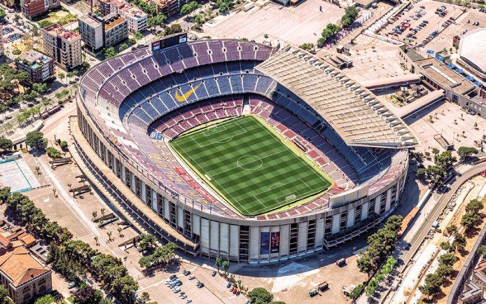
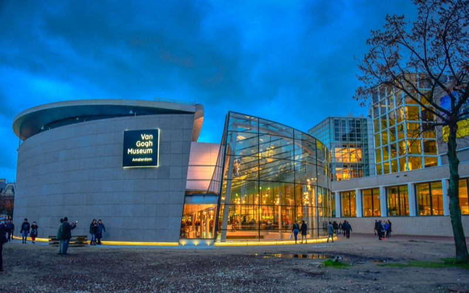

Brendon Schimmelpfennig da Silva
Me chamo Brendon Schimmelpfennig da Silva, tenho 21 anos e moro em São Lourenço do Sul. Trabalho com internet e programação há mais ou menos 3 anos, incluindo empregos como programador, também social media, editor de vídeos e free lances.
Bem vindo ao primeiro Trabalho de Fundamentos de Desenvolvimento de Software. Abaixo confira mais sobre mim.
Hobbies
- Jogar Counter-Strike

- Futebol
- Treinar

Países que eu gostaria de conhecer
| País | Imagem |
|---|---|
| Espanha |  |
| Estados Unidos | |
| Holanda |  |